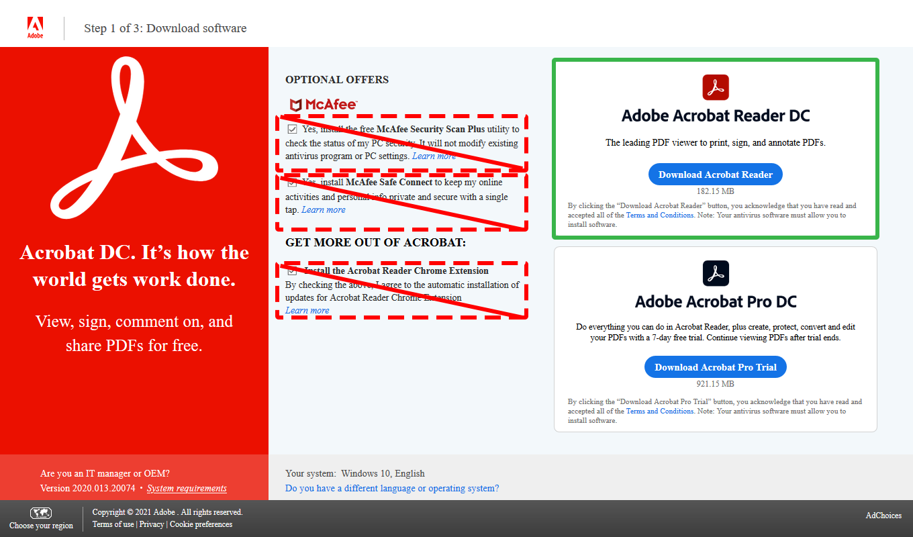

Fillable PDF
How to properly fillout and turn in a fillable PDF.Don't use Lumin PDF
The cloud features are not worth the headache. Trust me. Simply save your files on a flash drive so you can bring your files to and from class.
Use Adobe Acrobat
Adobe Acrobat is a free pdf software, and what was used to create the fillable PDF files.
NOTE: When installing Adobe Acrobat be sure to uncheck all the "Optional Offers" pictured above surrounded by red dashed boxes.
Also esnure that you choose Adobe Acrobat Reader DC, pictured above surrounded by a solid green outline. The bottom option is a trial for the pro version.
For further instructions...
If you require further instructions on assignment submission, please visit the Google Classroom example